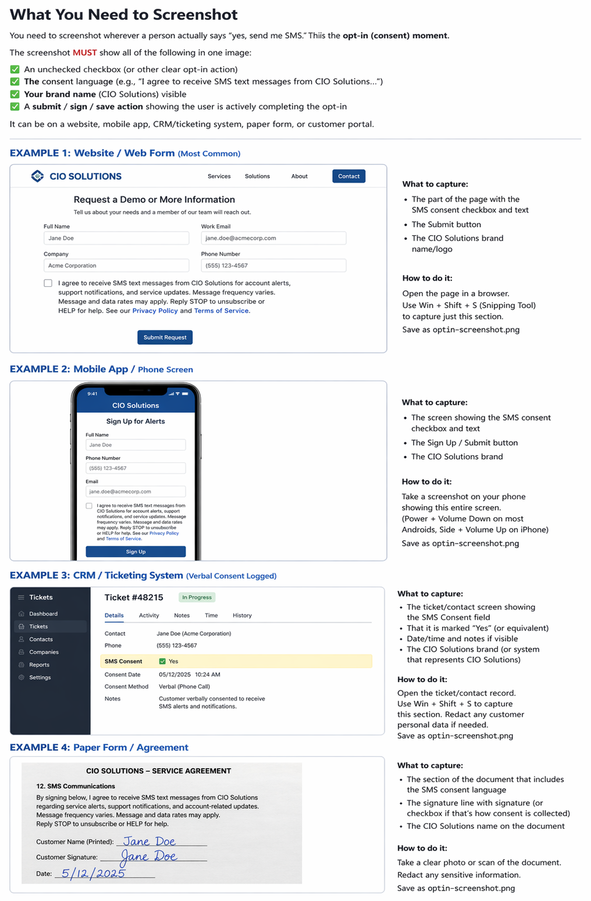

How to sign up, what you'll receive, and how to opt out.
CIO Solutions operates the Sentinel Alerts SMS program to send monitoring, security, and service notifications to authorized contacts at our managed-service clients. Messages are transactional and informational in nature (system alerts, incident notifications, scheduled-maintenance reminders, and support follow-ups).
Message frequency varies based on the alerts and activity associated with your organization's environment. Message and data rates may apply.
Reply STOP at any time to unsubscribe from SMS messages. Reply HELP for assistance, or contact us at support@ciosolutions.com or (805) 692-6700.
Authorized contacts at CIO Solutions client organizations opt in to receive SMS messages by completing the Sentinel Alerts enrollment form. Consent is collected via a separate, unchecked checkbox that is not bundled with Terms of Service or Privacy Policy acceptance. The checkbox is presented with the following language:
☐ I agree to receive SMS text messages from CIO Solutions regarding Sentinel Alerts, including system alerts, support notifications, and service updates. Message frequency varies. Message and data rates may apply. Reply STOP to unsubscribe or HELP for help. See our Privacy Policy and Terms of Service.
Screenshot of the opt-in form:

No mobile information will be shared with third parties or affiliates for marketing or promotional purposes. SMS opt-in data and consent records are never shared with third parties. Full details are available in our Privacy Policy.